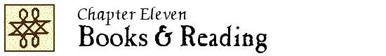

John Locke Chronology |
John Locke Manuscripts |
John Locke Resources |
John Locke Bibliography | ||

 1669
1669
The pens dexterity compleated: or, Mr. Riches short-hand now perfectly taught, which in his life-time was never done, by any thing made publique in print, because it would have hindred his practice. London, printed by T. Milborn, for H. Eversden; and for J. Jenner, 1669. 39, [9] p. 8o.
A version of Jeremiah Rich’s shorthand was used by Locke in his journals and notebooks.
Wing R1347
1689
De arte excerpendi vom gelahrten Buchhalten liber singularis, quo genera & præcepta excerpendi, ab aliis hucusque; tradita omnia, novis accessionibus aucta, ordinata methodo exhibentur, ex suis quæque materiis applicantur: speciatim scrinii literati inventium peculiare, ex manuscripto anonymi emendatum etiam exhibetur, una cum historia excerptorum propriorum Vincentii Placcii Hamburgensis. Accedit invitatio amica, super symbolis promissis aut destinatis ad anonymos et pseudonymos suos. Holmiæ & Hamburgi, Apud Gottfried Liebezeit, Bibliop. Literisque; Spiringianis, Anno M DC LXXXIX [1689]. [8], 228, [6] p. 8o.
Locke’s method of commonplacing is described on pp. 89-92; the index illustration is reproduced on pp. 90/91.
1728
Cyclopædia: or, An universal dictionary of arts and sciences; … – See entry in Chapter 3.
The article “Common-place-book” contains a description of Locke’s method.
1894
“John Locke’s pocket book” / George Williamson. // IN: New review. – 10 (1894):223-231.
Describes Locke’s copy of Goldsmith’s Almanack 1669, containing Locke’s journal for 1669.
Reprinted in: Behind my library door : some chapters on authors, books, and miniatures / by G.C. Williamson. – London : Selwyn & Blount, 1921. – p.85-100; and in: A Locke miscellany … / edited by Jean S. Yolton (1990). – p. 137-147.
Y&Y 1894.5, 1921.4
1906
“Locke manuscript” / W. Roberts. // IN: Notes and queries. – 10th series:5 (1906):65.
On a letter in the Forster collections, Victoria & Albert Museum.
B 105; Y&Y 1906.4
1932
[Anonymous].
“A Locke exhibition.” // IN: Times literary supplement. – 5 May 1932:336.
Describes an exhibit of the Lovelace collection at J. & E. Bumpus.
LNL 4:11
“Locke’s shorthand diaries” / W. Matthews. // IN: Times literary supplement. – 31 (29 Sept. 1932):691.
Y&Y 1932.19
1933
“John Locke’s library” / Helen Campbell Hughes. // IN: Book collector’s quarterly. – 3:no.12 (Oct. 1933):32-40.
LNL 4:11; Y&Y 1933.13
“John Locke, 1632-1704.” – See entry in Chapter 2.
1945
“Lowell’s commonplace books” / Richmond Croom Beatty. // IN: New England quarterly. – 18 (1945):391-401.
See also the reply by Jackson, “J. R. Lowell and John Locke” (1945)
1946
“J.R. Lowell and John Locke” / William A. Jackson. // IN: New England quarterly. – 19 (1946):113-114.
Reply to Beatty, “Lowell’s commonplace books” (1945)
H&W 1983; Y&Y 1946.3
1948
[Anonymous].
“John Locke’s journals and letters for the Bodleian” / from our London staff. // IN: Manchester guardian. – 21 May 1948:8.
“John Locke and shorthand” / W.J. Carlton. // IN: Notes and queries. – 193 (1948):125-126.
H&W 260; H&W 1983; Y&Y 1948.5
“John Locke’s papers : new acquisition by the Bodleian Library : financial help from Pilgrim Trust” / by Sir Edmund Craster. // IN: The Times (London). – 12 Jan. 1948:5, 10.
Y&Y 1948.6
Reprinted in: A Locke miscellany … / edited by Jean S. Yolton (1990). – p. 148-152.
“Unpublished papers of John Locke : Sir Edmund Craster on the value of the new material now in the Bodleian.” // IN: The Listener. – 39 (1948):538-539, 547.
“John Locke’s papers.” // IN: Seventeenth annual report, 1947 / Pilgrim Trust. – Westminster : The Trust, [1948?]. – p. 20-21.
Describes the purchase of the Lovelace Collection for the Bodleian Library.
1949
“John Locke’s unpublished papers” / Wolfgang von Leyden. // IN: Sophia. – 17 (1949):73-80.
H&W 261; Y&Y 1949.19
1950
“Du nouveau sur Locke” / Jean Pucelle. // IN: Revue philosophique de la France et de l’étranger. – 140 (1950):330-332.
Reprinted in Les études philosophiques. – 6 (1951):298-300.
Abstract: Bull.Sig. 5:3284, 8:4182.
H&W 261; H&W 1983; Y&Y 1950.14
1951
“Locke’s list of books banned in France in 1679” / J. Lough. // IN: French studies. – 5 (1951):217-222.
Includes “Catalogue de livres deffendus et qu’on trouve avec peine” [MS. Locke b. 2, ff. 26-29]
H&W 261; Y&Y 1951.13; A [953]
1952
“Lord Masham’s library at Oates” / Peter Laslett. // IN: Times literary supplement. – 15 August 1952):533.
LNL 4:13; Y&Y 1952.12
“Notes concerning papers of John Locke in the Lovelace Collection” / W. von Leyden. // IN: Philosophical quarterly. – 2 (1952):63-69.
H&W 262; Y&Y 1952.20
1953
“Locke’s reading during his stay in France (1675-79)” / by John Lough. // IN: The Library. – 5th series:8 (1953): 229-258.
Prints lists of books included in Locke.s journals during his travels in France, and in MS. Locke f. 28 and MS. Locke b. 2.
H&W 262; Y&Y 1953.10; T 170; A [954]
1957
“John Locke, 1632-1704” / T.J. Brown. – (English literary autographs ; 22). // IN: Book collector. – 6(1957): 171.
LNL 1:8; Y&Y 1957.1
Wolvercote Mill : a study of paper-making at Oxford / by Harry Carter. – Oxford : Clarendon Press, 1957.
See “A memorandum addressed to John Locke in 1696 on the failure of the Company of White Paper Makers” [“Reasons why the paper manufacture in England has not succeeded,” MS. Locke c.30, f. 43] (p. 66)
A 964
“John Locke” / D.M. Davin. – (Query 86). // IN: Book collector. – 6 (1957):292.
Announcement of De Beer’s edition of Locke’s correspondence.
Y&Y 1957.7
“The library of John Locke” / by J.R. Harrison and Peter Laslett. // IN: Times literary supplement. – 27 Dec. 1957:792.
LNL 4:16; Y&Y 1957.10
“The importance of manuscripts” / F.H. Heinemann. // IN: Estudios de historia de la filosofia (Universidad Nacional de Tucuman). – 1 (1957):51-66.
B 185
1959
James Forte : a 17th century settlement, possibly pre-1625, from the earliest known map of the Cape Fear River, the John Locke sketch of the Shapley map of the Cape Fear River, 1662 … / by Cornelius M.D. Thomas. – Wilmington, N.C. : Charles Towne Preservation Trust, ©1959. – (Clarendon imprints ; no. 3)
See 3, “Locke sketch of the Shapley map of 1662” [B.M. Add. MS. 5415, f. 4: copy by Locke, ca. 1671, of a lost original] (p. 47-48 + plate)
B 185
1960
[Anonymous].
“Gifts from Mr. Paul Mellon and Dr. E.S. de Beer.” // IN: Bodleian Library record. – 6:no. 5 (Aug. 1960):575-576.
Y&Y 1960.13
[Anonymous].
“Locke and Donne to Bodley.” // IN: Times literary supplement. – 11 March 1960:161.
“Commentary.” // IN: Book collector. – 9 (1960):133.
On the Mellon donation of papers from the Lovelace Collection to the Bodleian Library.
LNL 4:18; Y&Y 1959.18
“John Locke’s books and papers for his own university” / by Peter Laslett. // IN: Times literary supplement. – 11 March 1960:168.
LNL 4:18; H&W 1983; Y&Y 1960.15
1963
“The Lovelace Collection.” // IN: John Locke / by Richard I. Aaron. – 2nd ed. (1963 printing). – p.309-312.
Reprinted in the 3rd ed. (1971)
“Jon Rokku no Lovelace Collection ni tsuite” = “On the Lovelace Collection of the John Locke papers” / Masao Hamabayashi. // IN: Shigaku zasshi. – 72:no.6 (June 1963):46-48.
1964
“John Locke, physician and book collector” / John Harrison. // IN: Journal of the history of medicine and allied sciences. – 19 (1964):70-71.
See also the comment by Poynter (1964)
LNL 4:21; Y&Y 1964.9
“John Locke, physician and book collector” / F.N.L. Poynter. // IN: Journal of the history of medicine and allied sciences. – 19 (1964):298-299.
Comment on Harrison’s article (1964)
Y&Y 1964.23
1965
“List of works in Locke’s library” / supplied by John Harrison. // IN: The doctrines of the great educators / by Robert R. Rusk. – 3rd ed. – New York : St. Martin’s Press ; London : Macmillan, 1965. – p. 155-156.
List of books dealing with education.
The library of John Locke / by John Harrison and Peter Laslett. – Oxford : published for the Oxford Bibliographical Society by the Oxford University Press, 1965. – viii, 292 p. – (Oxford Bibliographical Society publications ; new series, 13)
Also: 2nd ed. – Oxford : Clarendon Press, 1971. – xi, 313 p.
Reviews: Anon., “What Locke looked at” (1966); E. de Beer, Library 21 (1966):343-347; W. Sachse, Ren.Q. 20 (1967):523-525; J.W. Yolton, J.Hist.Phil. 5:176-178; J.M. Edelstein, P.B.S.A. 60 (1966):482-485.
Y 343, 344; H&W 265; LNL 2:2; Y&Y 1965.19, 1976.23; T 167; A [956]
.
1966
[Anonymous].
“What Locke looked at.” // IN: Times literary supplement. – 10 February 1966:112.
Review of Harrison & Laslett, The library of John Locke (1965)
1967
“A note on Locke’s library” / Geoffrey Keynes. // IN: Transactions of the Cambridge Bibliographical Society. – 4 (1967):312-313.
H&W 266; Y&Y 1967.26
1969
“John Locke’s library : portrait of an intellectual” / Richard Ashcraft. // IN: Transactions of the Cambridge Bibliographical Society. – 5 (1969):47-60.
Abstract: BullSig 24:2463.
LNL 1:10; Y&Y 1969.2
Reprinted in: A Locke miscellany … / edited by Jean S. Yolton (1990). – p. 226-245.
“Milton from John Locke’s library” / Donald E. Fatch. // IN: Soundings. – 1:no. 1 (May 1969):32-34.
On Locke’s copy of Milton’s works 1698 [H&L 1194]
1970
[Anonymous].
“John Locke and his books.” // IN: Osler Library newsletter. – 3 (Feb. 1970):1-2.
Y&Y 1970.12
1972
“Locke and the Inquisition of Toulouse” / M.A.E. Nickson. // IN: British Museum quarterly. – 36 (1972):83-92.
LNL 5:5; Y&Y 1972.26
“Polonica w bibliotece Locke’a” / Zbigniew Ogonowski. // IN: Archiwum historii filozofii i myśli społecznej. – 18 (1972):279-291.
List of 54 books relating to Poland owned by Locke; summary in French: “Les ‘ Polonica’ dans la bibliothèque de John Locke” (p. 291)
Abstracts: BullSig 27:3707; BPh 20:1230.
1973
“John Locke’s (?) copy of the 1594 Geneva Enchiridion” / Horst E. Meyer. // IN: Book collector. – 22 (1973):536. – “Query 280.”
LNL 6:7; Y&Y 1973.22
1976
“Books from Locke’s library” / H.A.S. Schankula. // IN: Locke newsletter. – 7 (1976):121-124.
LNL 8:7
1978
“The John Locke Room in the Bodleian Library, Oxford” / R.J. Roberts. // IN: Locke newsletter. – 9 (1978):21-25.
LNL 10:9
1980
“A note on the manuscript of Locke’s translation of Nicole’s Essais de morale” / Jean S. Yolton. // IN: Locke newsletter. – 11 (1980):104-107.
LNL 12:9
1982
“English books before 1700” / [by R. Julian Roberts]. // IN: Bodleian Library record. – 10 (1982):376-382; 11 (1983):120-125.
LNL 15:6
1983
“Locke’s ‘ coquinaria’ ” / Jean S. Yolton. // IN: Petits propos culinaires. – 14 (1983):39-44.
LNL 15:7
Reprinted in: A Locke miscellany … / edited by Jean S. Yolton (1990). – p. 153-160.
1985
“Ancient Jewish coins in the correspondence between John Locke and Nicolas Toinard” / by Henryk Minc. // IN: Biblical archaeologist. – 48 (1985):108-121.
Includes translation of relevant passages from the correspondence.
LNL 19:10; LS 1:8
1987
“Locke’s Adversaria” / J.R. Milton. // IN: Locke newsletter. – 18 (1987):63-74.
LNL 19:10
1988
“The date and significance of two of Locke’s early manuscripts” / J.R. Milton. // IN: Locke newsletter. – 19 (1988):47-89.
On an early notebook, MS Locke f.14, and a booklist, PRO 30/24/47/30, ff.42-43.
LNL 20:6
1989
“Book news in Locke’s correspondence (1683-1692)” / H. Bots and M. Evers. // IN: Dutch quarterly review of Anglo-American letters. – 19 (1989):230-242.
Reprinted in: Fabrics and fabrication : the myth and making of William and Mary / edited by Paul Hoftijzer and C.C. Barfoot. – Amsterdam ; Atlanta, GA : Rodopi, 1990. – (DQR studies in literature series ; 6). – p. 297-311.
1992
“Locke and Gilles de Launay” / J.R. Milton. // IN: Locke newsletter. – 23 (1992):115-130.
1993
“Notions in garrison : the seventeenth-century commonplace book” / Peter Beal. // IN: New ways of looking at old texts : papers of the Renaissance English Text Society, 1985-1991 / edited by W. Speed Hill. – Binghampton, N.Y. : Renaissance English Text Society, 1993. – Medieval and Renaissance texts and studies ; 107). – p. 131-147.
“Medicina, chimica e filosofia naturale nella biblioteca di John Locke” / Antonio Clericuzio. // IN: Bibliotecae selectae da Cusano a Leopardi / a cura di Eugenio Canone. – Firenze : Leo S. Olschki, 1993. – (Lessico intellettuale europeo ; 58). – p. 333-375.
LNL 25:5
“The function of longhand in Locke’s shorthand” / Guy Meynell. // IN: Bodleian Library record. – 14 (1993):340-342.
LNL 25:8
“John Locke’s method of common-placing, as seen in his drafts and his medical notebooks, Bodleian MSS Locke d. 9, f. 21 and f. 23” / G. G. Meynell. // IN: Seventeenth century. – 8 (1993):245-267.
Includes a transcription of the English draft of Locke’s Adversariorum methodus [1685] (p. 258-263)
LNL 25:8
“Sydenham, Locke, and Sydenham’s De peste sive febre pestilentiali.” – See entry in Chapter 9.
“Locke’s early political reading.” – See entry in Chapter 7.
1994
“Locke’s medical notebook, ‘ Adversaria 3’.” – See entry in Chapter 9.
“Manservant as amanuensis, Sylvester Brounower” / J.R. Milton. // IN: Locke newsletter. – 25 (1994):79-83.
LNL 26:8
1996
“Locke, travel literature, and the natural history of man” / Daniel Carey. // IN: Seventeenth century. – 11 (1996):259-280.
LNL 28:5
Reprinted in: John Locke : critical assessemnts of leading philosophers. Series II / edited by Peter R. Anstey (2006). – vol. 4.
“The recovery of Locke’s library” / Peter Laslett, in conversation with John Rogers. // IN: The philosophical canon in the 17th and 18th centuries : essays in honour of John W. Yolton / edited by G.A.J. Rogers and Sylvana Tomaselli. – Rochester, N.Y. : University of Rochester Press, 1996. – p. 67-82.
LNL 27:8
Printed common-place books and the structuring of Renaissance thought / Ann Moss. – Oxford : Clarendon Press, 1996.
See p. 278-280.
LS 2:8
“Ephraim Chambers’s Cyclopaedia (1728) and the tradition of commonplaces” / Richard Yeo. // IN: Journal of the history of ideas. – 57 (1996):157-175.
1997
Samuel Johnson and the life of reading / Robert DeMaria Jr. – Baltimore ; London : Johns Hopkins University Press, 1997.
See p. 38-40, 43-44, 57-58, 239-240.
LNL 29:5
2000
“The library of John Locke, some additions and emendations” / J.R. Milton. // IN: Locke newsletter. – 31 (2000):157-158.
LS 1:8
“Encyclopaedic knowledge” / Richard Yeo. // IN: Books and the sciences in history / edited by Marina Frasca-Spada and Nick Jardine. – Cambridge : Cambridge University Press, 2000. – p. 207-224.
2001
Encyclopaedic visions : scientific dictionaries and Enlightenment culture / Richard Yeo. – Cambridge : Cambridge University Press, 2001.
See “The commonplace method of arrangement” (p. 110-115) and “Lockean reform” (p. 155-169)
2002
“John Locke at three English book auctions : December 1681 to June 1682” / T. A. Birrell. // IN: Studies in de achttiende eeuw voor Uta Janssens / redactie Frans Korsten & Jos Blom. – Nijmegen : Afdeling Engelse Taal en Cultur KUN, 2002. – p. 11-27.
Unverified.
Reprinted in: Aspects of book culture in early modern England / T. A. Birrell ; edited by Jos Blom. – Farnham, Surrey : Ashgate Variorum, ©2013. – 43-62.
LS 13:5
“Locke and alchemy.” – See entry in Chapter 9.
“Von Leyden’s transcripts of Locke’s shorthand.” – See entry in Chapter 1.
New
“Between history and politics : Philipp van Limborch’s Historia inquisitionis” / Luisa Simonutti. // IN: Histories of heresy in early modern Europe : for, against, and beyond persecution and toleration / edited by John Christian Laursen. – New York : Palgrave Macmillan, 2002. – pages 101-118.
Unverified.
2004
“Anomalies in Locke’s index to Boyle’s Skeptical chymist (1661)” / Guy Meynell. // IN: Locke studies. – 4 (2004):223-233.
LS 5:10
“John Locke’s ‘ New method’ and the tradition of commonplaces” / Richard Yeo. – Paper presented at the John Locke Tercentenary Conference, St Anne’s College, Oxford, 2-4 April 2004.
“John Locke’s ‘ New method’ of commonplacing : managing memory and information” / Richard Yeo. // IN: Eighteenth-century thought. – 2 (2004):1-38.
LS 5:15
Reprinted in: John Locke : critical assessemnts of leading philosophers. Series II / edited by Peter R. Anstey (2006). – vol. 4.
2005
“Noting the mind : commonplace books and the pursuit of the self in eighteenth-century Britain” / Lucia Dacome. // IN: Journal of the history of ideas. – 65 (2005):603-625.
LS 5:6
2006
“Travel, geography, and the problem of belief : Locke as a reader of travel literature.” – See entry in Chapter 3.
2007
“ ‘ The fodder of our understanding’ : Benjamin Furly’s library and intellectual conversation c. 1680-c. 1725.” – See entry in Chapter 12.
“Mercator theologico-philosophicus : Benjamin Furly reading.” – See entry in Chapter 12.
“Esmond de Beer” / Donald Kerr. – (Portrait of a bibliophile ; 39). // IN: The book collector. – 56 (2007):329-351.
2009
“A gift from John Locke to Jean Le Clerc” / Jacob van Sluis. // IN: Locke studies. – 9 (2009):201-203.
Report of a copy of the 1694 edition of the Essay, given by Locke to Le Clerc.
LS 10:12
2010
Comonplace books and reading in Georgian England / by David Allan. – Cambridge : Cambridge University Press, 2010.
See esp. Ch. 5, “‘A sort of register or orderly collection of things’: Locke and the organisation of wisdom” (p. 61-70).
LS 11:4
“The great ocean of knowledge” : the influence of travel literature on the work of John Locke / by Ann Talbot. – Leiden ; Boston : Brill, 2010. – vi, 337 p. – (Brill’s studies in intellectual history ; vol. 184)
ISBN 978-9-00418115-1.
LS 10:13
2012
“Coleridge’s fly-catchers : adapting commonplace-book form” / Jillian M. Hess. // IN: Journal of the history of ideas. – 73 (2012):463-483.
2013
“A Locke commonplace book in Glasgow University Library” / J.R. Milton. // IN: Locke studies. – 13 (2013):145-149.
A description of MS. Murray 416.
LS 14:11
“The library of John Locke : additions, corrigenda, and a conspectus of pressmarks” / Felix Waldmann. // IN: Bodleian Library record. – 26: no. 1 (2013):36-58.
Unverified.
LS 14:16
2014
“John Locke’s ‘new method of making common-place-books’: tradition, innovation and epistemic effects” / Michael Stolberg. // IN: Early science and medicine. – 19 (2014):448-470.
Notebooks, English virtuosi, and early modern science / Richard Yeo. – Chicago ; London : The University of Chicago Press, 2014.
ISBN 978-0-226-10656-4.
Review: J. Rioux, Review of metaphysics 68(2015):682-684.
2015
“Locke, Horace, and a Syllabus errorum” / Felix Waldmann. // IN: Locke studies. – 15 (2015):3-29.
Discussion of Houghton Library, Harvard University, fMS Eng. 1090 (4), a set of correction to the 1701 edition of Horace’s Eclogues.
2016
New
“Medical note-taking in the sixteenth and seventeenth centuries” / Michael Stolberg. // IN: Forgetting machines : knowledge management evolution in early modern Europe / edited by Alberto Cevolini. – Leiden ; Boston : Brill, ©2016. – (Library of te written word ; volume 53). – (The handpress world ; volume 40). – pages 243-264.
New
“Notebooks, recollection, and external memory : some early modern English ideas and practices” / Richard Yeo. // IN: Forgetting machines : knowledge management evolution in early modern Europe / edited by Alberto Cevolini. – Leiden ; Boston : Brill, ©2016. – (Library of te written word ; volume 53). – (The handpress world ; volume 40). – pages 128-154.